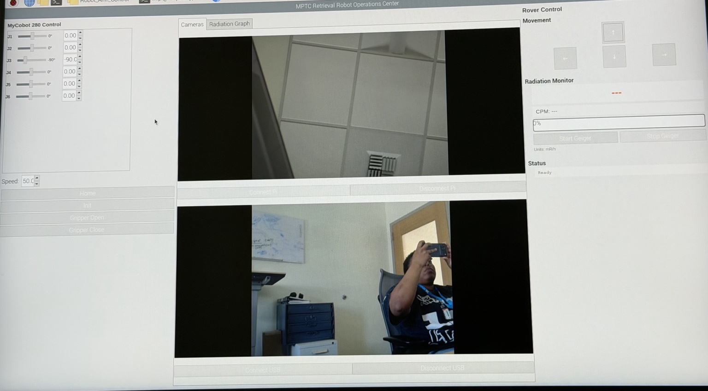

Python / PyQt5
Developed the operator interface that brings arm controls, rover navigation, camera views and radiation sensor readouts together.
SUMMER 2026 · ROBOTICS INTERN · IDAHO NATIONAL LABORATORY
Reconfiguring existing robotic hardware and developing a unified operator interface to assist with retrieval of displaced irradiated specimens in a specialized test-cell environment.

01 / CONTEXT
During my robotics internship at the Structural Properties Laboratory at Idaho National Laboratory’s Materials and Fuels Complex, I worked on a specimen retrieval system for the MPTC. The test cell uses Universal Robots (UR) robotic arms and other equipment to manipulate samples during testing. Small irradiated specimens may become displaced or fall, creating a need for a remotely operated retrieval approach.
02 / MY ROLE
I reconfigured existing components to create a mobile retrieval platform and used a Raspberry Pi as the central computer. I developed a Python/PyQt5 graphical interface that brought robotic arm control, rover movement, front and wrist camera views, and Geiger counter readings into one place. The goal was to make the separate subsystems more cohesive for operator use.
03 / INTERFACE
The interface includes six robot-joint controls, gripper commands, rover movement buttons, two camera panels, and a radiation-monitoring area. Combining these functions allows an operator to view the work area and manage the robot from one application.

04 / HARDWARE TESTING
These recordings document separate robotic arm and mobile rover subsystem tests during development.
These recordings demonstrate subsystem testing and validation, highlighting the functionality and performance of individual components prior to full system integration.
05 / ENGINEERING SKILLS
Robotic system integration, Raspberry Pi development, Python/PyQt5 GUI programming, human–machine interface design, camera integration, sensor monitoring, and physical hardware testing.
SKILLS IN PRACTICE
Here is how the tools and techniques from my Technical Skills section were applied to this project.
Developed the operator interface that brings arm controls, rover navigation, camera views and radiation sensor readouts together.
Used as the central computer for integrating the robotic arm, rover and connected devices.
Applied hardware integration and connection troubleshooting to coordinate the robot’s electronic components.